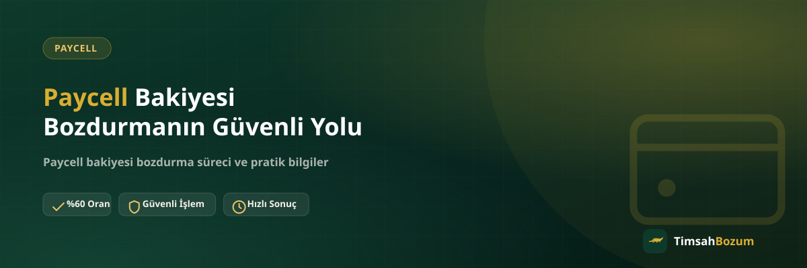

Paycell cüzdanında bir bakiye biriktiğinde çoğu kullanıcının ilk aklına gelen soru "bunu güvenli şekilde nasıl değerlendirebilirim" oluyor. Bakiye tabanlı bir hizmet olduğu için süreç aslında basit işliyor, ama güvenliği sağlayan birkaç kurala dikkat etmek işlemi hem hızlandırıyor hem de gönül rahatlığıyla tamamlamanı sağlıyor. Bu yazıda Paycell bakiyeni bozdururken nelere dikkat etmen gerektiğini adım adım anlatıyoruz.
Paycell Bozdurma İşlemi Güvenilir mi?
Paycell bakiyesi bozdurma, bakiye tabanlı bir hizmet olduğu için kısmi bozum imkânı sunar ve süreç tamamen WhatsApp üzerinden yürür. Güvenliği belirleyen şey hizmetin kendisi değil, işlemi yürüttüğün kanal ve paylaştığın bilginin doğruluğu. Resmi hat üzerinden, doğru bilgiyle ve oran teyidi alarak ilerlediğin sürece işlem güvenli şekilde tamamlanır.
Güvenli Bozdurma İçin Hangi Bilgiler Paylaşılmalı?
İşlemi başlatmak için ihtiyacın olan tek şey, Paycell cüzdanındaki güncel bakiyeni net ve okunaklı şekilde gösteren bir ekran görüntüsü. Ekran görüntüsünde tutarın açıkça görünmesi, eski veya bulanık bir görsel paylaşmaman işlemi hem hızlandırır hem de gereksiz bilgi tekrarının önüne geçer. Bunun dışında herhangi bir belge, form veya kimlik bilgisi istenmez.
Hesabına Erişim Vermen Gerekir mi?
Hayır, ve bu güvenli bir bozum işleminin en temel kuralı. Paycell uygulama şifren, giriş bilgilerin veya hesabına erişim hiçbir şekilde senden istenmez. İşlemi yürütmek için tek gereken, bakiyeni gösteren bir ekran görüntüsü ve WhatsApp üzerinden iletişim. Hesabına erişim isteyen ya da uygulamaya giriş yapmanı talep eden bir talep gelirse bu, resmi sürecin dışındadır.
SMS Doğrulama Kodu İstenirse Ne Anlama Gelir?
Hattına gelen bir SMS doğrulama kodu, bozum işleminin hiçbir aşamasında senden istenmez. Bu kod hesabına veya hattına erişim anlamına gelir ve bozdurma süreciyle ilgisi yoktur. Böyle bir talep gelirse işlemi derhal durdurmalı ve kodu kimseyle paylaşmamalısın; bu açık bir dolandırıcılık belirtisidir.
Oranı Teyit Etmeden İşlem Başlatılır mı?
Hayır. Güncel oranlar zamanla değişebildiği için sitede yayınlanan oran genel bir referans niteliğindedir, işlem öncesinde güncel oranın WhatsApp üzerinden teyit edilmesi gerekir. Oran teyit edilmeden bilgi paylaşıp işlemin başladığını düşünmek, karşılıklı beklemeye yol açan en sık karışıklık noktalarından biri. Teyit edilen oranı not almak, süreç boyunca referans olarak işine yarar.
Resmi WhatsApp Hattını Sahte Hesaplardan Nasıl Ayırt Edersin?
TimsahBozum'un tüm işlemleri yalnızca sitede yayınlanan resmi WhatsApp hattından (+90 543 887 21 71) yürür. Instagram DM'i, farklı bir telefon numarası veya başka bir mesajlaşma uygulaması üzerinden "TimsahBozum" adına gelen bir teklif resmi değildir. Böyle bir durumla karşılaşırsan, bilgini paylaşmadan önce resmi numaradan teyit al; bu basit adım, sahte hesaplara bilgi vermeni önler.
Kısmi Bozum Güvenliği Nasıl İşler?
Paycell bakiye tabanlı bir hizmet olduğu için cüzdanındaki bakiyenin tamamını bozdurmak zorunda değilsin, istediğin tutarı belirtip kalanını hesabında bırakabilirsin. Bu esneklik, elinde ihtiyaç duymadığın küçük bir bakiye birikse de büyük bir tutar birikse de aynı güvenli süreçle değerlendirmene imkân verir. Paycell bozdurma sayfamızda güncel oranı ve süreci ayrıntılı bulabilirsin.
Güvenli Bozum İçin Sık Yapılan Hatalar
En sık rastlanan hatalar arasında eski tarihli bir bakiye ekran görüntüsü paylaşmak, oranı teyit etmeden işlemin başladığını düşünmek ve resmi hat dışında bir kanaldan bilgi paylaşmak var. Bu hataların hiçbiri işlemi imkânsız hale getirmez, ama gereksiz yere geciktirir. Bilgini doğru kanaldan, güncel ve eksiksiz şekilde paylaşmak işlemi ilk mesajdan itibaren hızlandırır.
Hangi Saatlerde İşlem Başlatabilirsin?
TimsahBozum her gün 10:00 ile 03:00 arası aktif. Bu saatler dışında gönderdiğin bir mesaj kaybolmaz, hat açıldığında sırayla yanıtlanır. Gece geç saatte bakiyeni gösteren ekran görüntüsünü paylaşıp beklemeye geçmen, güvenlik açısından bir risk oluşturmaz; önemli olan bilgini doğru kanaldan ve eksiksiz paylaşmış olman. Aynı mesajı art arda birkaç kez göndermek yanıt süresini kısaltmaz, sadece konuşmayı karmaşıklaştırır.
İşlem Sonrası Kaydı Saklamak Neden Önemli?
Oran teyit edilip ödeme yapıldıktan sonra WhatsApp konuşmanı ve paylaştığın ekran görüntüsünü bir süre silmemen işine yarayabilir. İleride bir soru çıkması durumunda, hangi tutarın hangi oranla değerlendirildiğini gösteren bu kayıt elinde referans olarak kalır. Bu basit alışkanlık, hem senin hem de işlemi yürüten tarafın aynı bilgiye dayanmasını sağlar ve olası bir karışıklığı baştan önler.
Birden Fazla Paycell Hesabın Varsa Güvenli Bozum Nasıl Yapılır?
Farklı telefon numaralarıyla açılmış birden fazla Paycell hesabın varsa, her birini tek tek ve ayrı mesajlarla bildirmek yerine güncel bakiyeleri gösteren ekran görüntülerini tek seferde toplu paylaşmak işlemi hem güvenli hem de hızlı hale getirir. Her hesap için oran aynı şekilde teyit edilir; hangi görüntünün hangi hesaba ait olduğunu mesajında belirtmen, karışıklığı önler ve işlemin tek turda sonuçlanmasını sağlar.
Güvenli Bir İşlem İçin Son Kontrol
Bozum işlemine başlamadan önce şu üç noktayı kontrol etmen yeterli: bilgini yalnızca resmi WhatsApp hattından paylaşıyor musun, ekran görüntün güncel ve okunaklı mı, oranı teyit etmeden işlemin başladığını düşünmüyor musun? Bu üç noktaya dikkat ettiğinde Paycell bakiyeni bozdurma süreci hem hızlı hem de güvenli şekilde tamamlanır.
İlgili Yazılar
- Paycell Bakiyesi Nasıl Oluşur, Nereden Gelir?
- Resmi Bozum Hattını Sahte Hesaplardan Ayırt Etme
- SMS Doğrulama Kodu İsteyen Kişilere Dikkat
Paycell bakiyeni güvenli şekilde değerlendirmek, doğru kanaldan iletişim kurmak ve bilgini eksiksiz paylaşmaktan ibaret. Hazır olduğunda WhatsApp hattımıza yazarak işlemini başlatabilirsin.